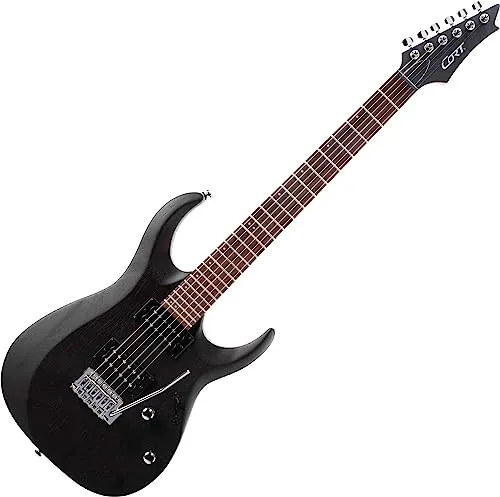

Le più diffuse chitarre elettriche, le solid body, letteralmente "corpo massiccio/pieno", non hanno una cassa di risonanza, ma un corpo di legno pieno (o, più raramente, di altri materiali quali resine sintetiche, resine acriliche, plexiglas).
La forma del corpo, il legno con cui è realizzato e il tipo di pick-up usato sono determinanti ai fini della resa sonora dello strumento.
I legni principalmente utilizzati sono: per bolt-on neck, ontano e tiglio per il corpo, acero per il manico, eventuale ricopertura in palissandro per la tastiera; per il neck-thru, mogano per il corpo, frassino o acero per il manico, palissandro per la tastiera.
Per il set-neck generalmente si utilizza mogano sia per il corpo sia per il manico e palissandro per la tastiera. Esistono tuttavia numerosissimi modelli che usano legni diversi da questi citati.
Le chitarre costruite in Asia possono utilizzare legni locali, come l'agathis al posto dell'ontano e il nato al posto del mogano, che hanno rese acustiche simili.
Anche il PVC è stato utilizzato per realizzare delle chitarre solid body, e più recentemente si stanno utilizzando materiali compositi con sagomature interne per replicare la timbrica dei vari legni.